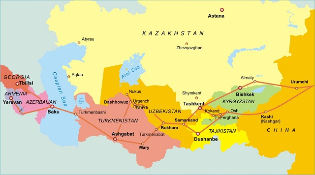

Uzbekistan is a hospitable warm land where the sun shines brightly 300 days a year. Nature generously rewarded the country with an amazing variety of landscapes: the hot sands of the Kyzyl Kum desert, the coolness of the Tien Shan mountains, transparent lakes, lifeless steppes and green oases - all this is Uzbekistan.
Once upon a time thousands of rich caravans of the Great Silk Road passed here, which connected the Middle East and the Mediterranean with India and China. Along the life-giving arteries of caravan roads, new cities flourished, national cuisine absorbed the best recipes of overseas dishes and gradually crystallized into the famous Uzbek cuisine that we all know and love.